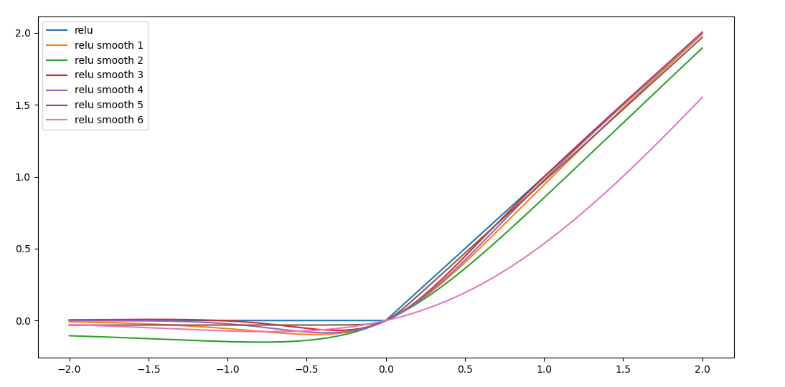
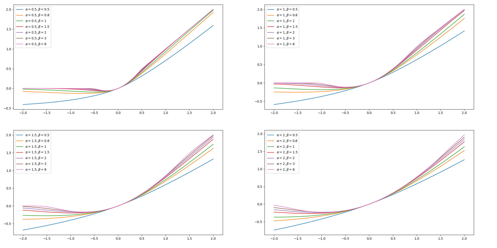

天马行空：设计自己的激活函数
天马行空，发挥想象力，设计自己的激活函数~
这一篇其实是上一篇函数光滑近似（4）：Heaviside step函数很自然的衍生。
激活函数的数学本质
在从函数光滑近似的角度统一理解激活函数中我们谈过，激活函数分量大类：
- 第一类，逼近$H(x)$或$\operatorname{sign}(x)$的激活函数，两种本质是一样的
- 第二类，逼近$\operatorname{relu}(x)$
考虑到，
因此，第一类是可以导出第二类，因此这里关注第二类即可。
当然，广义来说，还是不止这些，还包括maxout、softmax、Gaussian激活函数，不过这里不想把摊子铺太大，就专注这两类。
激活函数的设计思路
对于第一类激活函数，就是寻找$H(x)$的逼近形式，由于
这里$\delta(t)$为狄拉克函数，因此找到$\delta(t)$的光滑逼近也就找到$H(x)$的光滑逼近。还有，
因此，找到$\max{0, x}$的光滑逼近也就是找到$H(x)$的光滑逼近。
对于第二类激活函数，就是寻找$\operatorname{relu}(x)$的光滑逼近形式。注意到，
因此，这两类激活函数的设计思路本质上还是寻找$H(x)$的光滑逼近。为什么要求光滑呢？因为模型训练需要良好的梯度特性。假设有$\operatorname{relu}(x)$光滑逼近形式$\operatorname{relu}_s(x)$，其来自，
而$H_s(x)$往往是一个广义的“S”型函数，那么$\operatorname{relu}_s(x)$存在两类参数控制其形状：
- 尺度参数，直观上看是$x$的缩放因子
- 形状参数，控制$\operatorname{relu}_s(x)$的形状，如单调区间
激活函数实例
因此，根据函数光滑近似（4）：Heaviside step函数及其应用中的结论，容易设计$\operatorname{relu}(x)$光滑逼近形式$\operatorname{relu}_s(x)$。
激活函数$\operatorname{relu}_s(x)$形式一，
激活函数$\operatorname{relu}_s(x)$形式二，
激活函数$\operatorname{relu}_s(x)$形式三，
激活函数$\operatorname{relu}_s(x)$形式四，
该形式取$\sigma=1$就得到GELU激活函数。详细可见GELU由来：从狄拉克函数到GELU激活函数。该激活函数无法直接计算，因为$\operatorname {erf}(x)$是一个积分，需要初等函数逼近它。不同形式逼近$\operatorname {erf}(x)$，就获得不同的$\operatorname{relu}_s(x)$。论文Gaussian Error Linear Units (GELUs)中指出两种形式，可以看刚刚提及的那篇文章。
激活函数$\operatorname{relu}_s(x)$形式五，
激活函数$\operatorname{relu}_s(x)$形式六，
这里取$\alpha=1$就得到Swish激活函数，此外还有一种导出思路，详细见Google的激活函数Swish是怎么设计出来的？。
激活函数$\operatorname{relu}_s(x)$形式七，
取$\alpha=1$得Mish激活函数，详细见Mish激活函数的设计思路。
基于广义正态分布的激活函数$\operatorname{relu}_s(x)$，
其中$\beta$是$\operatorname{relu}_s(x)$的形状参数，$\alpha$是尺度参数。
实现和可视化
以上有六种激活函数，可视化对比一下，

基于广义正态分布的激活函数$\operatorname{relu}_s(x)$可视化如下，

以上光滑逼近及其可视化：https://github.com/allenwind/smooth-approximation-function 。
可能会根据情况持续更新~
其他的衍生思路
激活函数一般都是对输出单独使用，即
那么是否可以联合多个输出呢？如两个层的输出为未激活前的分别为$x, y$，那么多变量联合的激活函数形式为，
现有的具体形式是softmax。
或者，
这种形式不就是门机制么？
总结
激活函数是神经网络的重中之重，没有激活函数，神经网络不过是一个线性模型。本文虽说是天马行空地设计激活函数，但是以上的分析说明激活函数的设计是有章可循的—设计不同的激活函数的本质是寻找$H(x)$的光滑逼近。
转载请包括本文地址：https://allenwind.github.io/blog/16003
更多文章请参考：https://allenwind.github.io/blog/archives/